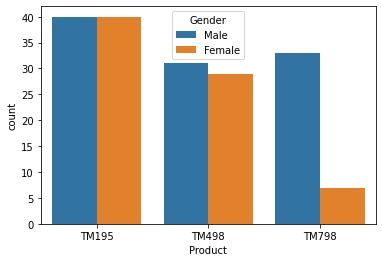
CardioGood Fitness: Treadmill Customer Profiling
Descriptive analytics to build a buyer profile for each of three treadmill product lines

FIFA World Cup Analysis
Mining 80+ years of World Cup history to guide a new football club's strategy

Uber NYC Trip Demand Analysis
Exploring six months of NYC Uber pickups to understand when and where ride demand peaks
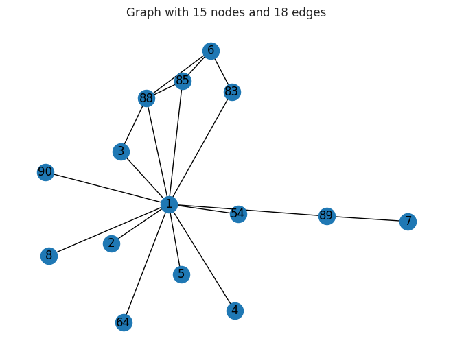
CAVIAR Criminal Network Analysis
Tracking how a Montreal drug-trafficking network reorganized under repeated police seizures

Clustering Countries by Socio-Economic Profile
Grouping 167 nations by health, trade, and income indicators to guide aid and development decisions

Enron Email Network Analysis
Using social network analysis to surface the key actors in Enron's senior leadership

Genomic Data Clustering: Decoding the Genetic Code
Using unsupervised learning to rediscover that DNA reads in three-letter codons

Unsupervised Pattern Discovery with PCA and t-SNE
Compressing high-dimensional education and air-pollution data to reveal hidden structure

BigMart Sales Prediction
Predicting item-level outlet sales with interpretable linear regression

Employee Attrition Prediction
Why employees leave — and predicting who is at risk
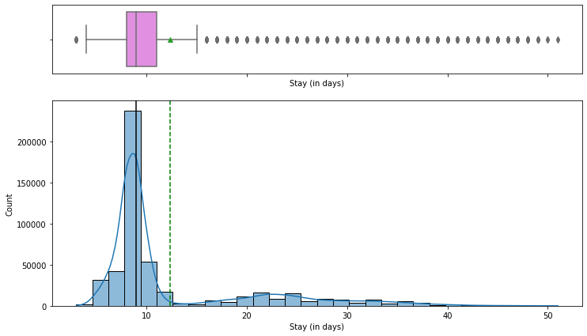
Predicting Hospital Length of Stay
Forecasting patient length-of-stay at admission to help HealthPlus plan beds, staff, and resources

SuperKart Retail Sales Forecasting
Predicting per-product store sales for the upcoming quarter with linear regression
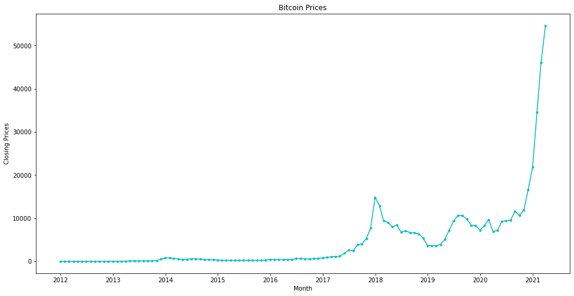
Bitcoin Price Prediction
Forecasting monthly Bitcoin closing prices with classical time-series models
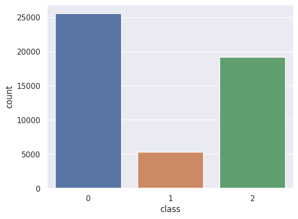
Celestial Object Detection
Classifying stars, galaxies, and quasars from Sloan Digital Sky Survey photometry
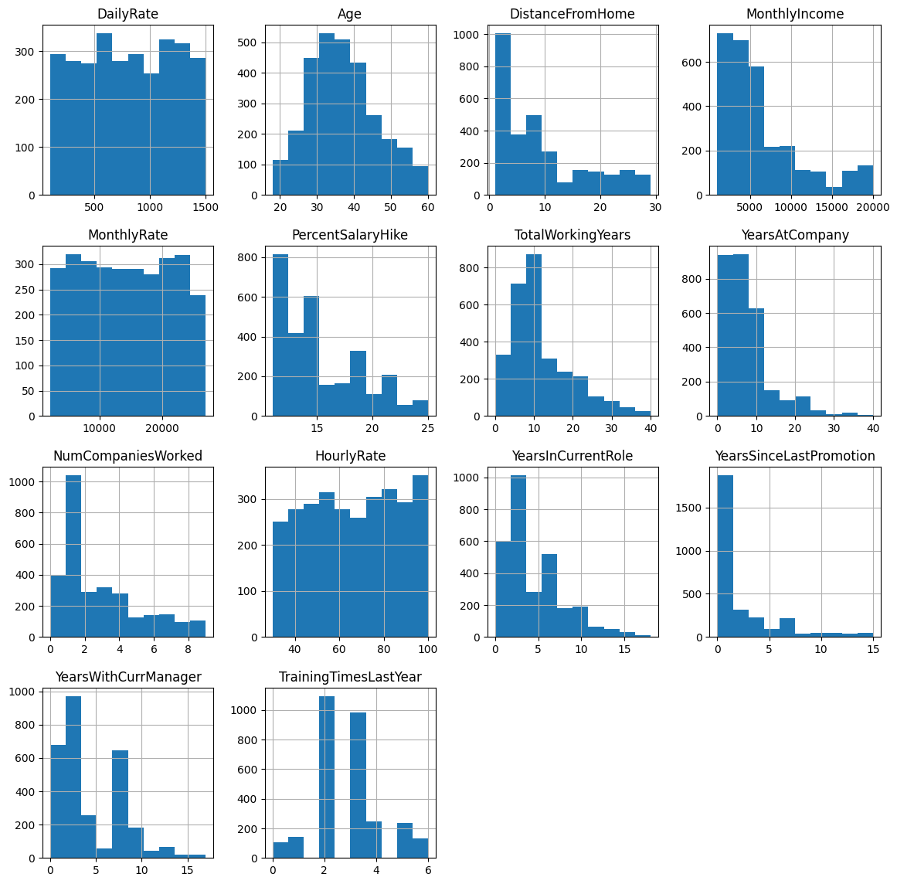
Predicting Employee Attrition at McCurr Health Consultancy
An end-to-end classification pipeline to flag at-risk employees before they leave

Predicting Hospital Length of Stay for HealthPlus
A deployable regression model that forecasts patient length of stay at admission to plan beds, staff, and resources
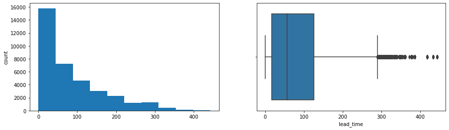
Predicting Hotel Booking Cancellations for INN Hotels
Using tree-based classifiers to flag at-risk bookings before they cancel

Audio MNIST: Spoken-Digit Recognition with a Neural Network
Classifying spoken digits 0-9 from raw .wav audio using MFCC features and a Keras ANN
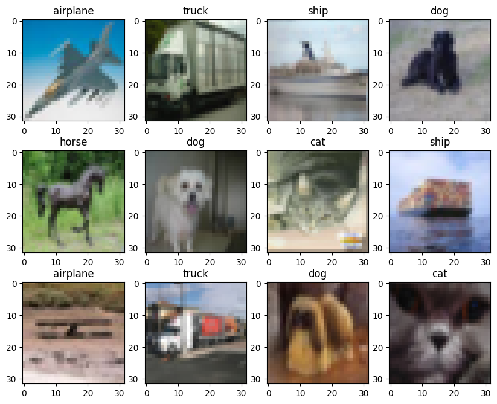
CIFAR-10 Image Classification with CNNs
Classifying 32x32 color images into 10 object classes with convolutional neural networks and transfer learning
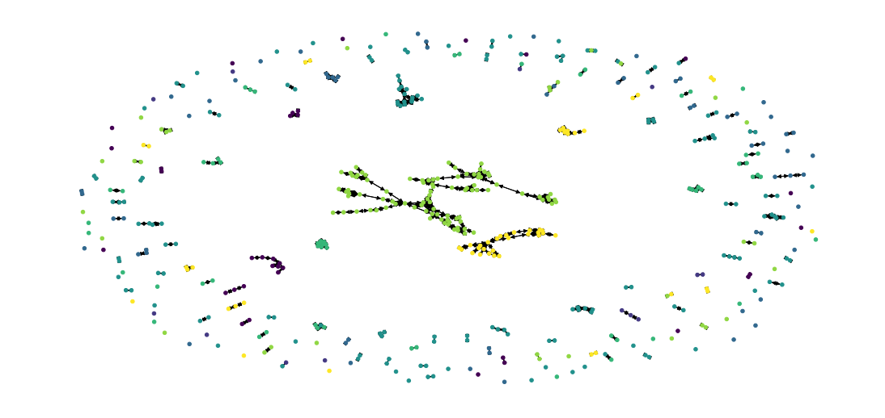
Citation Network Classification with Graph Neural Networks
Predicting a paper's research topic from how it cites other papers, using a GCN on the Cora dataset

COVID-19 Chest X-Ray Classification
A CNN decision-aid that triages chest X-rays into COVID, Normal, and Viral Pneumonia
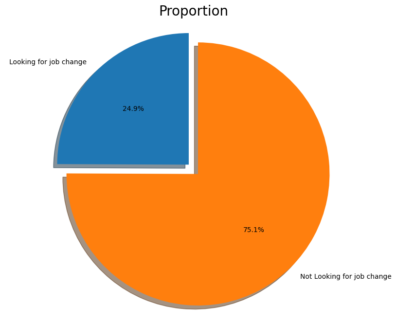
Predicting Employee Attrition with Deep Learning
An artificial neural network that flags which data scientists are likely to switch jobs

Food Image Classification with CNNs
Teaching a convolutional neural network to tell Bread, Soup, and Vegetable-Fruit apart
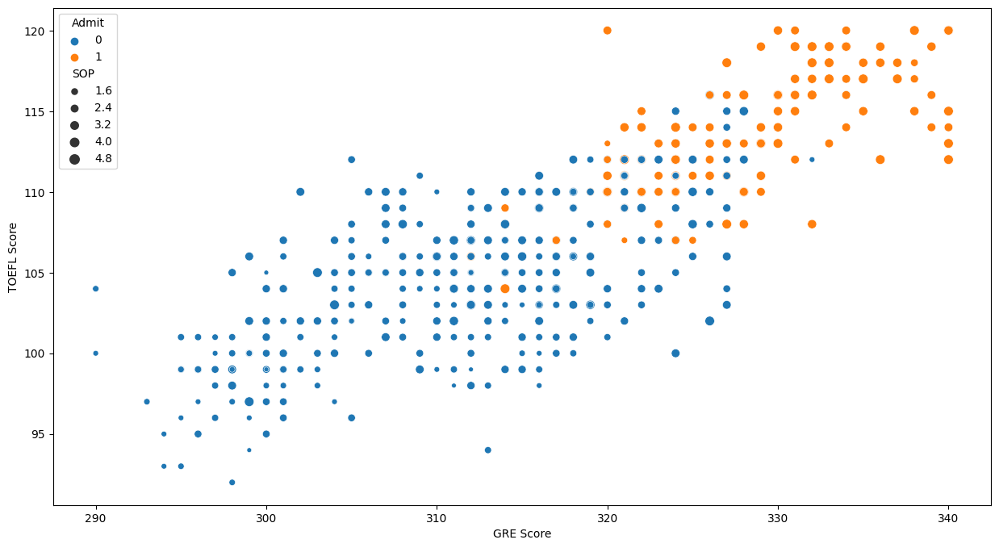
Predicting Graduate Admission Chances
A neural network that flags which applicants are likely to be admitted to UCLA
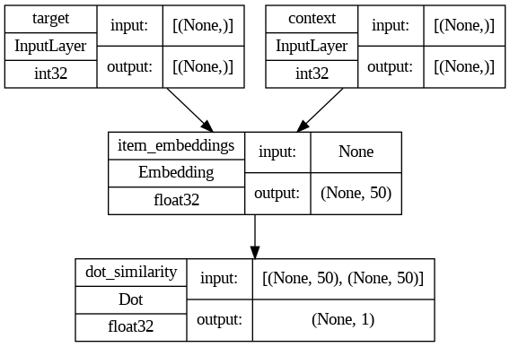
Movie Recommendation with Graph Neural Networks
Learning movie embeddings from co-viewing patterns on MovieLens to suggest the next film to watch
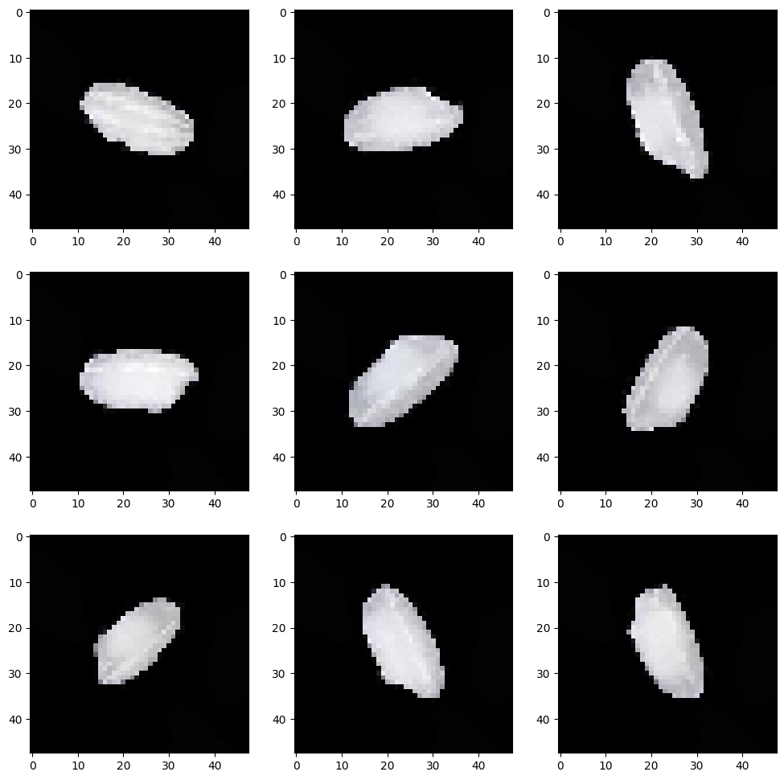
Rice Type Classification with CNNs
Sorting five rice varieties from magnified grain images using deep learning
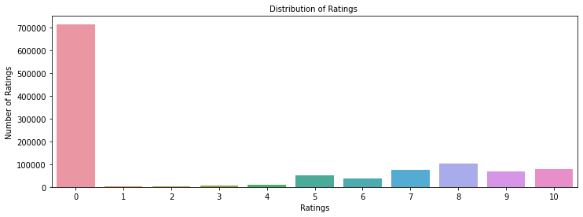
Book Recommendation System
Comparing rank-based, collaborative filtering, and matrix factorization approaches to recommend books

MovieLens Movie Recommendation System
Recommending relevant movies from user rating history with popularity, collaborative filtering, and SVD
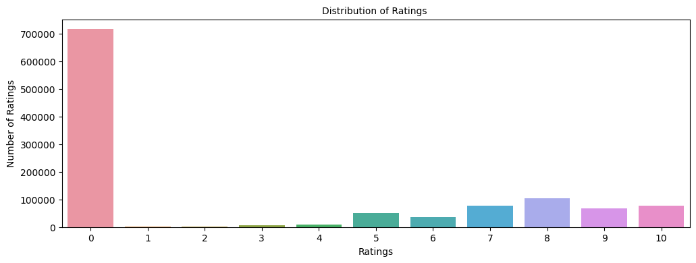
Building a Product Recommender at Scale
Comparing rank-based and collaborative-filtering recommenders on millions of user ratings
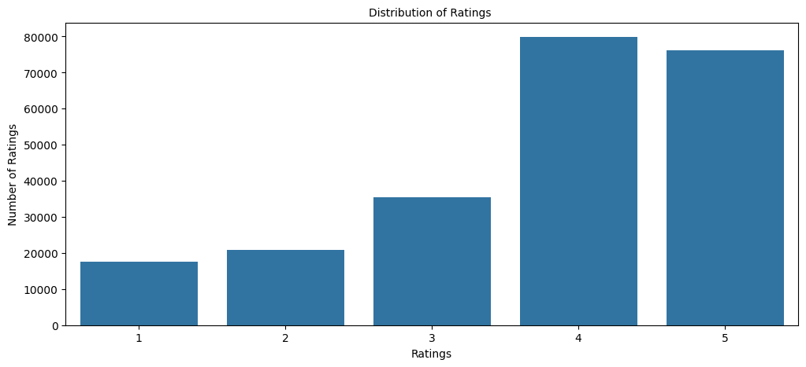
Yelp Restaurant Recommendation System
Recommending restaurants from Yelp reviews using both collaborative filtering and content-based NLP

Used Cars Price Prediction (Capstone)
Pricing 7,253 used cars for Cars4U with regression on log price